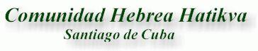

Acknowledgements
This web site had been impossible to carry out without the help of many people. Neither would you be you seeing this site if the Jewish Community Hatikva did not exist.
Many institutions, organizations and individual people have helped in great measure so that our community has force, health and life. This page is a simple gratefulness to the help that you have offered us.
And while the time passes, we hope this list grows more and more. If we have forgotten somebody, it has not been our intention. Please, write us and we will be able to repair our omission.
To the American Joint Distribution Comittee for the sustained help and indispensable for the operation of our community and synagogue.
Congregation Netivot Shalom in Berkeley, California. For their fraternity and their constant desire of increasing our knowledge about Jewish life.
The Cuba-America Jewish Mission.
Jewish Solidarity and Cuban Jewish Aid Society.
Congregations Adath Israel and the Patronato, Havana.
Congregation Beth Israel, Templo Beth Abraham and Templo Peninsula Sh'lomo, California.
Communities of Guadalajara and Monterrey of Mexico.
Canadian Jewish Congress.
Rabbis Sh'muel Steindhendler, Stuart Kelman, Roberto Feldman, Claudio Kaiser, Alejandro Felch, Eliezer Finkelman.
And, as we already said, to so many and so many other organizations, institutions and people that have collaborated with us and have given us their unconditional help.
TODA RABA!!!!